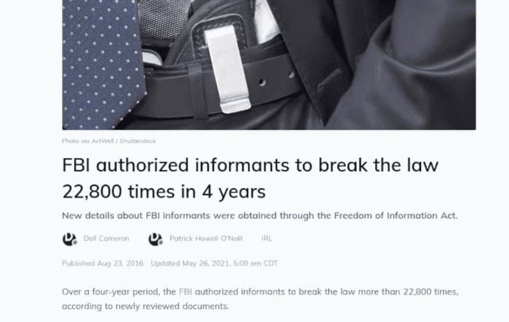
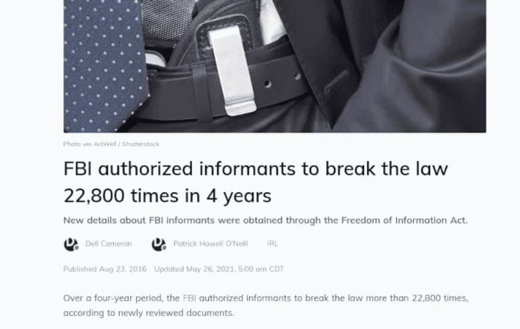

Feds Paid Informants at Least $500M in Recent Years
~7 min read | Published on 2021-02-25, tagged FEDS, General-News using 1645 words.
In recent years, federal law enforcement agencies paid more than $500 million to informants. Some informants are now millionaires.
According to the most recent records compiled by OpenTheBooks.com, federal agencies, including the Drug Enforcement Administration, Federal Bureau of Investigation, and the Bureau of Alcohol, Tobacco, Firearms and Explosives paid informants at least $548 million between 2011 and 2020. The available records are in some cases incomplete and outdated. The true cost of federal informants is likely much higher.

Forbes:
“Federal agencies paid out at least $548 million to informants working for the Federal Bureau of Investigation (FBI), the Drug Enforcement Agency (DEA), and the Bureau of Alcohol, Tobacco, Firearms and Explosives (ATF), in recent years, according to government audits.”
<h2 id="fbi-informants">FBI Informants </h2>
From a 2019 OIG report on the FBI’s use of informants (CHS is an abbreviation of confidential human source):
“Between FY 2012 and FY 2018 the FBI spent an average of $42 million annually in payments to its CHSs. As of May 2019, nearly 20 percent of the FBI’s CHS base met its definition of a long-term CHS. As we conducted our audit, of particular concern was the FBI’s management of these long-term CHSs.”
<h2 id="batfe-informants">BATFE Informants </h2>
From a 2017 OIG report on the BATFE’s use of informants:
“The Bureau of Alcohol, Tobacco, Firearms and Explosives (ATF) uses confidential informants (CI) to assist in its law enforcement efforts by providing information related to unlawful activity. According to ATF officials, ATF would not be able to accomplish its mission without the use of CIs. ATF managed 1,855 active CIs as of January 2016, and it spent approximately $4.3 million annually on its CI Program in fiscal years (FY) 2012 through 2015.”
<h2 id="dea-informants">DEA Informants </h2>
The DEA dwarfed the figures from the two agencies listed above with some DEA informants earning more than $1 million working for the feds. From a 2016 OIG report of the DEA’s use of informants:
“The Drug Enforcement Administration (DEA) considers its Confidential Source Program to be critical to its pursuit of illegal narcotics trafficking. However, confidential sources can be motivated by factors other than combating crime, including financial gain and avoidance of punishment; therefore, care must be taken to evaluate and supervise their use. Between October 1, 2010, and September 30, 2015, the DEA had over 18,000 active confidential sources assigned to its domestic offices, with over 9,000 of those sources receiving approximately $237 million in payments for information or services they provided to the DEA.”
The OIG report on the DEA had some neat information, such as the DEA’s payments to deactivated informants who had made false statements to prosecutors.
“We found that the DEA did not adequately oversee payments to its sources, which exposes the DEA to an unacceptably increased potential for fraud, waste, and abuse, particularly given the frequency with which DEA offices utilize and pay confidential sources. For example, while DEA policy prohibits paying deactivated sources who were deactivated because of an arrest warrant or for committing a serious offense, we found two concerning instances of payments to previously deactivated sources. In one case, the DEA reactivated a confidential source who previously provided false testimony in trials and depositions. During the approximately 5-year period of reactivation, this source was used by 13 DEA field offices and paid $469,158. More than $61,000 of the $469,158 was paid after this source was once again deactivated for making false statements to a prosecutor.”
“This was not the only confidential source that received payments after having been deactivated. Based on our review of DEA’s confidential source data, we estimated the DEA may have paid about $9.4 million to more than 800 deactivated sources between fiscal years (FY) 2011 and 2015. While we describe in this report some concerns about the accuracy and completeness of the available DEA data, and while we did not review the circumstances of all of these payments in-depth, from i available information it appears that paying deactivated sources is common enough to justify much closer managerial oversight and review of such payments.”
<h2 id="limited-use">“Limited Use” </h2>
Even better is the part of the report about the DEA’s so-called “Limited Use” sources:
“Another area of concern is the DEA’s oversight of confidential sources it categorized as “Limited Use,” often referred to as “tipsters,” which DEA policy specifies are sources who make information available independently without direction by the DEA. The Limited Use category is regarded by the DEA as low-risk and therefore DEA policy requires the least supervision. Yet we found that Limited Use sources were some of DEA’s highest-paid sources, with 477 Limited Use sources during the period of our review having received an estimated $26.8 million.”
“Among the Limited Use sources the DEA established were Amtrak and Transportation Security Administration (TSA) employees. In November 2015, the OIG completed two separate investigations into DEA’s use of two Amtrak employees and one TSA employee as sources. These investigations determined the DEA’s use of these individuals as sources were improper. 1 During this audit, we found that, between FYs 2011 and 2015, the DEA used at least 33 Amtrak employees and 8 TSA employees as sources, paying the Amtrak employees over $1.5 million and the TSA employees over $94,000. Indeed, even after we issued our investigative reports detailing our findings of improprieties, the DEA continued to use seven Amtrak employees as sources.”
Even better is that $25 million went to just five informants:
“Additionally, when we asked the DEA Intelligence Division to provide us with an itemized list and overall total of payments to intelligence-related confidential sources, it was unable to do so. We reviewed DEA records and estimated that, during the 5-year period of our review, the Intelligence Division paid more than $30 million to sources who provided narcotics-related intelligence and contributed to law enforcement operations, $25 million of which went to just 9 sources. Additionally, we identified one source who was paid over $30 million during 30 years, some of it in cash payments of more than $400,000. We concluded the Intelligence Division’s management and oversight of its sources were not commensurate with the large amount of payments it made to them.”
<h2 id="legal-crimes">Legal crimes </h2>
“Official records obtained by the Daily Dot under the Freedom of Information Act (FOIA) show the Federal Bureau of Investigation permitted informants at least 5,649 times in 2013 to engage in activity that would otherwise be considered a crime. In 2014, authorization was given 5,577 times, the records show.”
For example:
“More recently, in 2013, FBI agents in Louisiana allegedly shot and killed a federal informant, Allen Desdunes, according to court records reviewed by the New Orleans Advocate. Desdunes, 37, reported to the bureau daily before “reneging on an agreement that had kept him out of jail even after investigators found several thousand dollars worth of heroin in his vehicle,” according to the paper. It remains unclear whether Desdunes was permitted to continue dealing drugs while providing the FBI information about his heroin supplier.”

“In 2003, a Cincinnati man named Jesse Tuttle was arrested after allegedly breaching the computer network of the Hamilton County Sheriff’s Department. Following his arrest, Tuttle claimed he was an FBI informant paid $1,000 each time he reported a vulnerability on a sensitive government network. While prosecutors sought charges against Tuttle, the FBI remained silent, even after court documents showed he had agreed to cooperate with federal investigators two years before.”
“According to Michael German, a former undercover agent with the FBI who researches national security law at the Brennan Center for Justice, the way in which “otherwise criminal activity” is characterized by the press doesn’t capture the intentions of the bureau’s Confidential Human Source Program. “The program is a matter of making sure that the illegal activity an informant is involved in is authorized,” he says.”
<h2 id="fake-kidnapping">Fake Kidnapping </h2>
The Forbes article surprisingly mentioned the FBI’s use of informants in their plot to kidnap Michigan Governor Gretchen Whitmer. In October 2020, the feds announced the arrests of six people for allegedly planning to kidnap Gov. Whitmer. The plot had the FBI’s fingerprints all over it which even the mainstream media covered:
Buzzfeed:
“The government has documented at least 12 confidential informants who assisted the sprawling investigation. The trove of evidence they helped gather provides an unprecedented view into American extremism, laying out in often stunning detail the ways that anti-government groups network with each other and, in some cases, discuss violent actions.”
“…some of those informants, acting under the direction of the FBI, played a far larger role than has previously been reported. Working in secret, they did more than just passively observe and report on the actions of the suspects. Instead, they had a hand in nearly every aspect of the alleged plot, starting with its inception. The extent of their involvement raises questions as to whether there would have even been a conspiracy without them.”
The media blamed right-wing extremists for the FBI’s plot. Seemed like a case of fed saturation but perhaps they prodded some idiots into participating in their ridiculous scheme. [img=]Pictures[/img]
Forbes also referenced Ray Epps although not by name.
One scenario readers of this site are familiar with is one not mentioned in the above article which is the way Homeland Security Investigations (HSI) arrests people who use murder-for-hire sites. Researchers with backdoor access to many of these sites siphon messages between customers and the site administrators, analyze the contents of the messages, and forward relevant information to the appropriate LEA. HSI is often the recipient of this information when the suspect(s) are living in the U.S.
What is clear is that there is no shortage of people willing to accept payment to commit crimes and provide law enforcement agencies with information about potential targets. Informants, as well official as LEOs operating in an open capacity with their official email addresses, regularly involve themselves in darkweb-related activities.
According to the most recent records compiled by OpenTheBooks.com, federal agencies, including the Drug Enforcement Administration, Federal Bureau of Investigation, and the Bureau of Alcohol, Tobacco, Firearms and Explosives paid informants at least $548 million between 2011 and 2020. The available records are in some cases incomplete and outdated. The true cost of federal informants is likely much higher.
All linked reports are PDF files. Sorry about that.
Forbes:
“Federal agencies paid out at least $548 million to informants working for the Federal Bureau of Investigation (FBI), the Drug Enforcement Agency (DEA), and the Bureau of Alcohol, Tobacco, Firearms and Explosives (ATF), in recent years, according to government audits.”
<h2 id="fbi-informants">FBI Informants </h2>
From a 2019 OIG report on the FBI’s use of informants (CHS is an abbreviation of confidential human source):
“Between FY 2012 and FY 2018 the FBI spent an average of $42 million annually in payments to its CHSs. As of May 2019, nearly 20 percent of the FBI’s CHS base met its definition of a long-term CHS. As we conducted our audit, of particular concern was the FBI’s management of these long-term CHSs.”
<h2 id="batfe-informants">BATFE Informants </h2>
From a 2017 OIG report on the BATFE’s use of informants:
“The Bureau of Alcohol, Tobacco, Firearms and Explosives (ATF) uses confidential informants (CI) to assist in its law enforcement efforts by providing information related to unlawful activity. According to ATF officials, ATF would not be able to accomplish its mission without the use of CIs. ATF managed 1,855 active CIs as of January 2016, and it spent approximately $4.3 million annually on its CI Program in fiscal years (FY) 2012 through 2015.”
<h2 id="dea-informants">DEA Informants </h2>
The DEA dwarfed the figures from the two agencies listed above with some DEA informants earning more than $1 million working for the feds. From a 2016 OIG report of the DEA’s use of informants:
“The Drug Enforcement Administration (DEA) considers its Confidential Source Program to be critical to its pursuit of illegal narcotics trafficking. However, confidential sources can be motivated by factors other than combating crime, including financial gain and avoidance of punishment; therefore, care must be taken to evaluate and supervise their use. Between October 1, 2010, and September 30, 2015, the DEA had over 18,000 active confidential sources assigned to its domestic offices, with over 9,000 of those sources receiving approximately $237 million in payments for information or services they provided to the DEA.”
The OIG report on the DEA had some neat information, such as the DEA’s payments to deactivated informants who had made false statements to prosecutors.
“We found that the DEA did not adequately oversee payments to its sources, which exposes the DEA to an unacceptably increased potential for fraud, waste, and abuse, particularly given the frequency with which DEA offices utilize and pay confidential sources. For example, while DEA policy prohibits paying deactivated sources who were deactivated because of an arrest warrant or for committing a serious offense, we found two concerning instances of payments to previously deactivated sources. In one case, the DEA reactivated a confidential source who previously provided false testimony in trials and depositions. During the approximately 5-year period of reactivation, this source was used by 13 DEA field offices and paid $469,158. More than $61,000 of the $469,158 was paid after this source was once again deactivated for making false statements to a prosecutor.”
“This was not the only confidential source that received payments after having been deactivated. Based on our review of DEA’s confidential source data, we estimated the DEA may have paid about $9.4 million to more than 800 deactivated sources between fiscal years (FY) 2011 and 2015. While we describe in this report some concerns about the accuracy and completeness of the available DEA data, and while we did not review the circumstances of all of these payments in-depth, from i available information it appears that paying deactivated sources is common enough to justify much closer managerial oversight and review of such payments.”
<h2 id="limited-use">“Limited Use” </h2>
Even better is the part of the report about the DEA’s so-called “Limited Use” sources:
“Another area of concern is the DEA’s oversight of confidential sources it categorized as “Limited Use,” often referred to as “tipsters,” which DEA policy specifies are sources who make information available independently without direction by the DEA. The Limited Use category is regarded by the DEA as low-risk and therefore DEA policy requires the least supervision. Yet we found that Limited Use sources were some of DEA’s highest-paid sources, with 477 Limited Use sources during the period of our review having received an estimated $26.8 million.”
“Among the Limited Use sources the DEA established were Amtrak and Transportation Security Administration (TSA) employees. In November 2015, the OIG completed two separate investigations into DEA’s use of two Amtrak employees and one TSA employee as sources. These investigations determined the DEA’s use of these individuals as sources were improper. 1 During this audit, we found that, between FYs 2011 and 2015, the DEA used at least 33 Amtrak employees and 8 TSA employees as sources, paying the Amtrak employees over $1.5 million and the TSA employees over $94,000. Indeed, even after we issued our investigative reports detailing our findings of improprieties, the DEA continued to use seven Amtrak employees as sources.”
Even better is that $25 million went to just five informants:
“Additionally, when we asked the DEA Intelligence Division to provide us with an itemized list and overall total of payments to intelligence-related confidential sources, it was unable to do so. We reviewed DEA records and estimated that, during the 5-year period of our review, the Intelligence Division paid more than $30 million to sources who provided narcotics-related intelligence and contributed to law enforcement operations, $25 million of which went to just 9 sources. Additionally, we identified one source who was paid over $30 million during 30 years, some of it in cash payments of more than $400,000. We concluded the Intelligence Division’s management and oversight of its sources were not commensurate with the large amount of payments it made to them.”
<h2 id="legal-crimes">Legal crimes </h2>
“Official records obtained by the Daily Dot under the Freedom of Information Act (FOIA) show the Federal Bureau of Investigation permitted informants at least 5,649 times in 2013 to engage in activity that would otherwise be considered a crime. In 2014, authorization was given 5,577 times, the records show.”
For example:
“More recently, in 2013, FBI agents in Louisiana allegedly shot and killed a federal informant, Allen Desdunes, according to court records reviewed by the New Orleans Advocate. Desdunes, 37, reported to the bureau daily before “reneging on an agreement that had kept him out of jail even after investigators found several thousand dollars worth of heroin in his vehicle,” according to the paper. It remains unclear whether Desdunes was permitted to continue dealing drugs while providing the FBI information about his heroin supplier.”

This is normal.
“In 2003, a Cincinnati man named Jesse Tuttle was arrested after allegedly breaching the computer network of the Hamilton County Sheriff’s Department. Following his arrest, Tuttle claimed he was an FBI informant paid $1,000 each time he reported a vulnerability on a sensitive government network. While prosecutors sought charges against Tuttle, the FBI remained silent, even after court documents showed he had agreed to cooperate with federal investigators two years before.”
“According to Michael German, a former undercover agent with the FBI who researches national security law at the Brennan Center for Justice, the way in which “otherwise criminal activity” is characterized by the press doesn’t capture the intentions of the bureau’s Confidential Human Source Program. “The program is a matter of making sure that the illegal activity an informant is involved in is authorized,” he says.”
<h2 id="fake-kidnapping">Fake Kidnapping </h2>
The Forbes article surprisingly mentioned the FBI’s use of informants in their plot to kidnap Michigan Governor Gretchen Whitmer. In October 2020, the feds announced the arrests of six people for allegedly planning to kidnap Gov. Whitmer. The plot had the FBI’s fingerprints all over it which even the mainstream media covered:
Buzzfeed:
“The government has documented at least 12 confidential informants who assisted the sprawling investigation. The trove of evidence they helped gather provides an unprecedented view into American extremism, laying out in often stunning detail the ways that anti-government groups network with each other and, in some cases, discuss violent actions.”
“…some of those informants, acting under the direction of the FBI, played a far larger role than has previously been reported. Working in secret, they did more than just passively observe and report on the actions of the suspects. Instead, they had a hand in nearly every aspect of the alleged plot, starting with its inception. The extent of their involvement raises questions as to whether there would have even been a conspiracy without them.”
Undercovers are interesting as well.
The media blamed right-wing extremists for the FBI’s plot. Seemed like a case of fed saturation but perhaps they prodded some idiots into participating in their ridiculous scheme. [img=]Pictures[/img]
from
the social media accounts of Brandon Caserta, one of the alleged ringleaders, paint perhaps a more confusing picture.Forbes also referenced Ray Epps although not by name.
One scenario readers of this site are familiar with is one not mentioned in the above article which is the way Homeland Security Investigations (HSI) arrests people who use murder-for-hire sites. Researchers with backdoor access to many of these sites siphon messages between customers and the site administrators, analyze the contents of the messages, and forward relevant information to the appropriate LEA. HSI is often the recipient of this information when the suspect(s) are living in the U.S.
What is clear is that there is no shortage of people willing to accept payment to commit crimes and provide law enforcement agencies with information about potential targets. Informants, as well official as LEOs operating in an open capacity with their official email addresses, regularly involve themselves in darkweb-related activities.